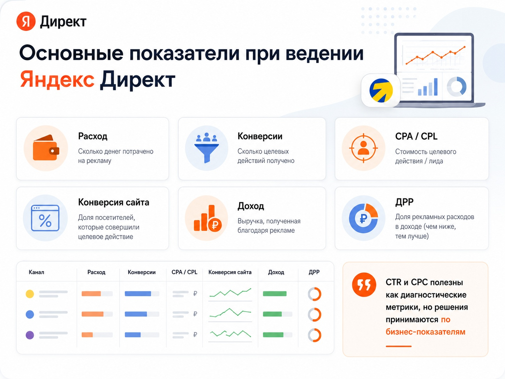

Блог о платном трафике
Ведение Яндекс Директ: что входит в работу специалиста
Ведение Яндекс Директ - это регулярная работа с уже запущенной рекламой: анализ статистики, контроль расходов, оптимизация кампаний, проверка качества трафика, работа с объявлениями и поиск новых связок.
Ведение Яндекс Директ - это постоянная работа с уже запущенной рекламой: анализ статистики, контроль расходов, оптимизация кампаний, проверка качества трафика, работа с объявлениями и поиск новых связок.
Одной настройки обычно недостаточно. После запуска появляются реальные данные: какие запросы приводят клиентов, какие площадки расходуют деньги впустую, какие аудитории конвертируются лучше и сколько фактически стоит заявка. Именно по этим данным реклама постепенно дорабатывается.
Я рассматриваю ведение Директа не как периодическое изменение ставок и минус-фраз, а как работу со всей связкой: реклама - посадочная страница - заявка - продажа.
Подробнее о моих услугах по настройке и ведению кампаний и результатах работы - в кейсах.

Чем ведение отличается от настройки Яндекс Директ
Настройка - это подготовка рекламы к запуску. Нужно определить структуру кампаний, подобрать аудитории и ключевые фразы, подготовить объявления, настроить цели, выбрать стратегию и запустить показы.
Ведение начинается после запуска.
На этом этапе уже можно работать не с предположениями, а с фактической статистикой. Становится видно, какие настройки дают результат и куда действительно уходит рекламный бюджет.
Поэтому даже хорошо настроенную кампанию нельзя просто запустить и забыть на несколько месяцев. Меняются спрос, конкуренция, поведение пользователей, стоимость трафика и накопленная статистика самой рекламной системы.
При этом постоянное вмешательство в настройки тоже не является целью. Современный Яндекс Директ во многом работает на автоматических алгоритмах, поэтому задача специалиста - не менять что-нибудь каждый день, а понимать, когда изменение действительно требуется.
Основные этапы запуска описаны в инструкции по настройке рекламы в Яндекс Директ.
Что входит в ведение Яндекс Директ
Состав работы зависит от проекта, но основные задачи обычно повторяются.
Анализ результатов рекламы
В первую очередь я смотрю не на количество кликов и не на CTR сам по себе, а на результат для бизнеса.
Для проекта с заявками это могут быть:
- количество обращений;
- стоимость заявки;
- качество заявок;
- конверсия сайта;
- расходы по отдельным кампаниям и направлениям;
- стоимость привлечения клиента, если есть данные из CRM.
Для интернет-магазина дополнительно имеет смысл анализировать заказы, выручку, ДРР и другие показатели экономики рекламы.
Сам Яндекс рекомендует при оценке performance-рекламы учитывать количество привлеченных клиентов, стоимость их привлечения и полученный доход, а не ограничиваться статистикой показов и кликов.
Работа с поисковыми запросами
Ключевая фраза и реальный запрос пользователя - не одно и то же. После запуска нужно смотреть, по каким запросам объявления действительно показывались.
Нецелевые формулировки исключаются, полезные запросы можно использовать для дальнейшего развития кампаний.
В Директе для этого есть отдельный отчет «Поисковые запросы», из которого можно добавлять минус-фразы и новые ключевые фразы.
Это постоянная работа. Невозможно заранее собрать такой список минус-фраз, который навсегда исключит весь нецелевой трафик.
О том, как собирать и добавлять исключающие запросы, читайте в статье о минус-фразах в Яндекс Директ.
Контроль площадок и качества трафика
Для рекламы в сетях я отдельно смотрю площадки, с которых приходят переходы и конверсии.
Высокий CTR или большое количество кликов еще не означают, что площадка полезна. Иногда источник дает много дешевого трафика, но почти не приносит нормальных обращений.
Поэтому площадки нужно оценивать по цепочке от перехода до целевого действия, а когда возможно - до качества лида и продажи.
Принципы работы сетей разобраны в статье что такое РСЯ в Яндекс Директ.
Работа со стратегиями
Сейчас значительная часть управления рекламой происходит через автоматические стратегии.
Например, стратегия «Максимум конверсий» может оптимизировать кампанию по средней цене конверсии, бюджету или другим заданным ограничениям. Яндекс также позволяет использовать данные о целях из Метрики и загруженные конверсии.
Работа специалиста здесь заключается не в постоянном ручном назначении ставок, а в правильном выборе целей и ограничений, контроле накопленных данных и корректировке стратегии, когда текущая модель перестает соответствовать задаче бизнеса.
Ручное управление ставками по-прежнему существует для поисковых кампаний, но это отдельный инструмент, а не обязательная основа любого ведения.
Подходы к выбору стратегии разобраны в статье о стратегиях в Яндекс Директ.
Контроль целей и аналитики
Если система получает неправильные данные о конверсиях, автоматическая оптимизация тоже начинает работать с неправильным сигналом.
Поэтому при ведении нужно периодически проверять:
- работают ли цели;
- не изменились ли формы на сайте;
- корректно ли учитываются звонки;
- передаются ли заказы и доход;
- нет ли дублей конверсий;
- соответствует ли выбранная цель реальной задаче бизнеса.
Для проектов с длинным циклом сделки имеет смысл передавать в рекламу данные из CRM и офлайн-конверсии. Центр конверсий Яндекс Директа позволяет объединять данные Метрики, звонков и офлайн-событий.
Работа с объявлениями и креативами
Объявления тоже нельзя считать законченными после первого запуска.
По мере накопления статистики можно менять тексты, изображения, предложения и акценты. Если определенный оффер заметно лучше превращает трафик в заявки, его имеет смысл развивать. Если объявление получает клики, но люди не оставляют заявки, нужно разбираться, что именно не совпадает с ожиданиями аудитории.
Для РСЯ и других визуальных форматов особенно важна работа с изображениями и несколькими вариантами креативов.
Контроль бюджета
Еще одна задача - следить не просто за тем, сколько денег потрачено, а куда именно они ушли.
Например, внутри одного аккаунта часть бюджета может уходить на направление с хорошей стоимостью обращения, а другая часть - на кампанию, которая давно перестала давать результат.
В таком случае общий CPA аккаунта может выглядеть приемлемо и скрывать проблему.
Поэтому бюджет нужно анализировать по кампаниям, продуктам, аудиториям и другим значимым срезам, а затем перераспределять в пользу работающих направлений.
Какие показатели я смотрю при ведении рекламы
Набор метрик зависит от бизнеса.
Обычно основными являются:
| Показатель | Что показывает |
|---|---|
| Расход | Сколько денег потрачено на рекламу. |
| Конверсии | Сколько целевых действий получено. |
| CPA / CPL | Сколько стоит конверсия или заявка. |
| CR | Какая доля трафика превращается в целевое действие. |
| Доход | Сколько выручки связано с рекламой. |
| ДРР | Какую долю от дохода составляет расход на рекламу. |
| Качество лидов | Сколько обращений действительно подходят бизнесу. |

В отчетах Яндекс Директа доступны данные по показам, кликам, расходу, конверсиям, доходу и другим показателям. При передаче ценности конверсий можно глубже связывать рекламную статистику с экономикой бизнеса.
CTR, средняя цена клика и количество показов я тоже использую, но в основном как диагностические показатели. Дешевый клик бесполезен, если после него никто не обращается.
О расчете целевой стоимости обращения читайте в статье о CPA в Яндекс Директ.
Контекст для оценки кликабельности есть в статье какой CTR считается хорошим в Яндекс Директ.
Как часто нужно оптимизировать Яндекс Директ
У ведения нет нормального графика в формате «каждый вторник изменить ставки и добавить пять минус-фраз».
Частота зависит от объема статистики и происходящего в аккаунте.
Крупный проект с большим рекламным бюджетом может требовать практически ежедневного контроля. В небольшом аккаунте для принятия решения иногда необходимо сначала накопить достаточно данных.
Особенно осторожно нужно относиться к автоматическим стратегиям. Если постоянно менять настройки только для того, чтобы показать заказчику активность, можно мешать алгоритмам нормально работать.
Поэтому хороший специалист должен уметь не только вносить изменения, но и понимать, когда кампанию лучше временно не трогать.
Нужно ли переделывать кампании при начале ведения
Не всегда.
Если реклама уже работает, сначала имеет смысл провести аудит и разобраться, что именно в ней происходит.
Иногда достаточно:
- изменить цели оптимизации;
- убрать слабые сегменты;
- перераспределить бюджет;
- почистить поисковые запросы;
- отключить проблемные площадки;
- изменить объявления;
- скорректировать стратегию.
Полная пересборка нужна только тогда, когда существующая структура действительно мешает дальнейшей работе.
Создание новых кампаний само по себе результата не дает. Если старая кампания накопила полезную статистику и нормально работает, удалять ее исключительно ради «новой настройки» обычно нет смысла.
Список проверок перед началом работы есть в статье об аудите Яндекс Директ.
Почему заявок может не становиться дешевле каждый месяц
Ведение рекламы не означает, что стоимость заявки обязана постоянно снижаться.
У любого рынка есть стоимость трафика, конкуренция и ограниченный объем спроса. Кроме того, при масштабировании часто приходится подключать менее очевидные аудитории, поэтому дополнительный объем заявок может стоить дороже уже найденного.
Есть и другая ситуация: кампания начинает приводить более дорогие, но значительно более качественные обращения. Формально CPL становится хуже, хотя продажи бизнеса растут.
Поэтому оценивать работу только по одному показателю опасно.
Главный вопрос - какую экономику реклама дает бизнесу.
Ведение рекламы и работа с сайтом
Иногда проблема находится вообще не в Яндекс Директе.
Можно хорошо подобрать аудиторию и получить целевые переходы, но потерять людей на посадочной странице из-за слабого предложения, неудобной формы, непонятной цены или технической ошибки.
Поэтому в своей работе я смотрю не только рекламный кабинет. Анализирую оффер, первый экран, формы, конверсию страницы и места, где пользователь может уйти без обращения. Такой же подход описан и на основной странице моего сайта.
Если реклама приводит нужную аудиторию, но сайт ее плохо конвертирует, бесконечно перестраивать кампании бессмысленно.
Сколько стоит ведение Яндекс Директ
Стоимость работы специалиста и рекламный бюджет - это разные расходы.
Цена ведения зависит от масштаба проекта: количества направлений, рекламного бюджета, объема кампаний, сложности аналитики и того, насколько глубоко нужно работать с воронкой.
Проект с одной услугой в одном регионе и интернет-магазин с тысячами товаров требуют совершенно разного объема работы.
Поэтому оценивать предложение подрядчика лучше не только по месячной цене. Нужно заранее понять, что именно входит в работу, какие показатели будут контролироваться и кто непосредственно занимается аккаунтом.
Как выбрать специалиста по ведению Яндекс Директ
Я бы смотрел прежде всего на четыре вещи.
Понимает ли специалист экономику проекта. Если обсуждение начинается и заканчивается CTR, ставками и количеством кликов, этого недостаточно.
Есть ли нормальная аналитика. Без целей и учета заявок невозможно объективно определить, какая часть рекламы работает.
Может ли специалист объяснить свои решения. Заказчик не обязан разбираться во всех настройках Директа, но должен понимать, куда расходуется бюджет и почему в кампании вносятся изменения.
Кто фактически будет вести проект. Между человеком, с которым вы общались до договора, и человеком, который ежедневно работает с рекламой, иногда может быть несколько уровней менеджеров.
Я веду проекты лично и работаю напрямую с клиентом. Такой формат позволяет быстрее разбираться с изменениями в рекламе, аналитике и самом бизнесе.
Примеры результатов собраны на странице кейсов.
Что в итоге дает ведение Яндекс Директ
Задача ведения - не поддерживать рекламный кабинет в активном состоянии и не создавать видимость постоянных изменений.
Цель - понимать, какие источники и рекламные связки приводят нужных бизнесу клиентов, отключать лишние расходы и постепенно находить возможности для роста.
Настройка запускает рекламу. Ведение превращает накопленную статистику в решения.